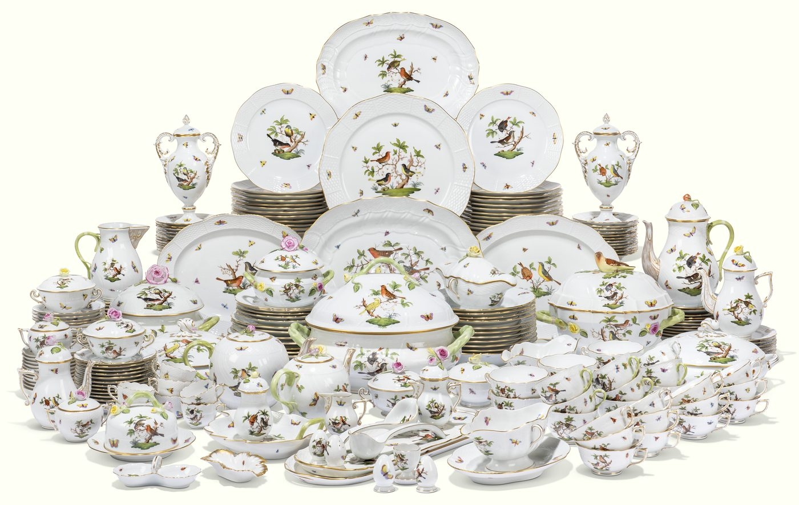
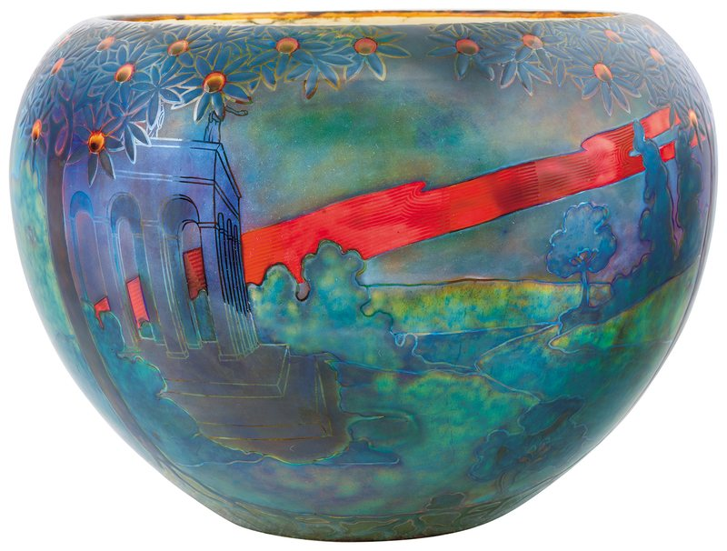
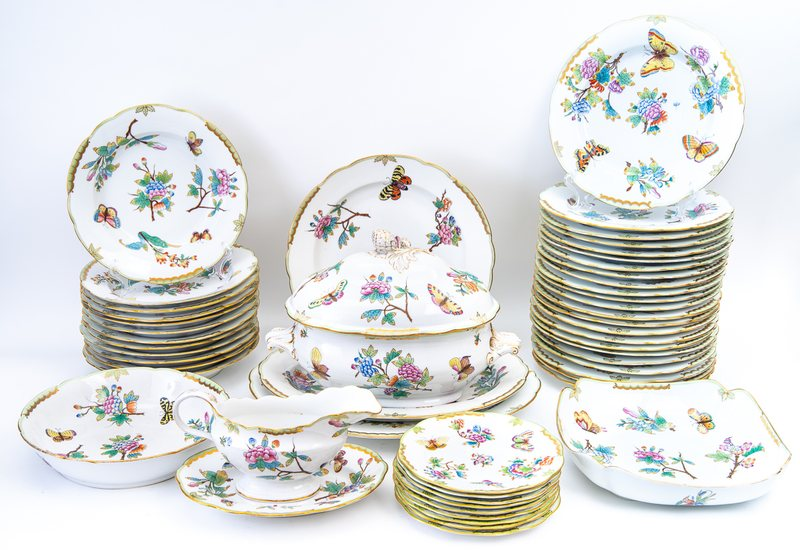
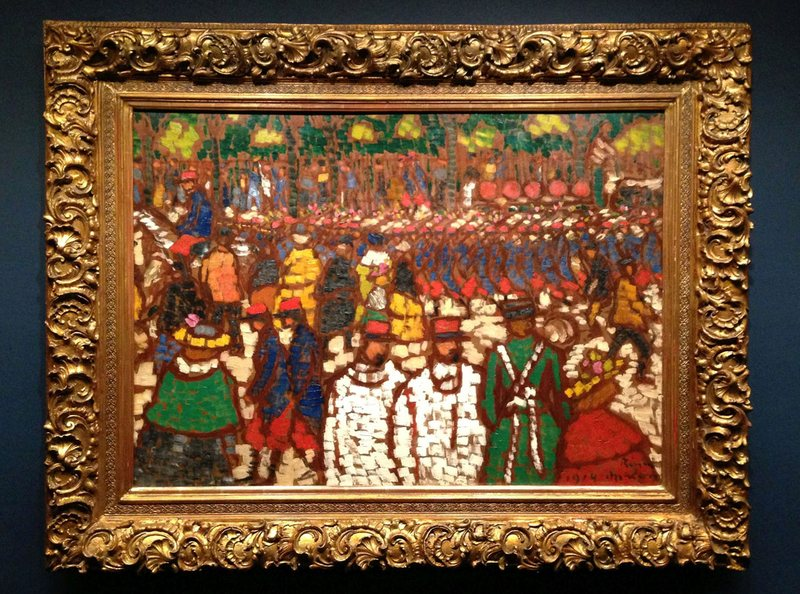
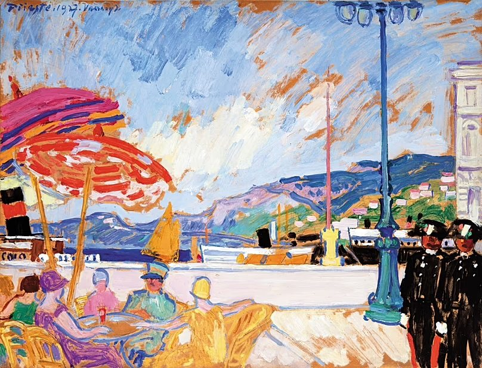

Régiségek és hagyaték
Egy porcelán, egy festmény, vagy egy egész lakás, amit most kell kiüríteni. Átnézzük, ami értékes, és tisztességes árat mondunk rá.
Hagyaték-felmérést kérekMit nézünk át
A porcelán alján lévő jelzés, a festmény hátoldala, a bútor fiókja: ezekből tudjuk meg, mikor és hol készült egy tárgy. Bundát is veszünk, arany ékszerrel együtt: bundafelvásárlás.
Porcelán és kerámiaHerend, Zsolnay, Hollóháza, Meissen, Bécs
Figura, váza, étkészlet, kávéskészlet. A hiányos készlet és a kis csorbás darab is számít.
Festmény és grafikaolajkép, akvarell, rézkarc
Szignós és szignó nélküli kép. A keretet és a hátoldalt is megnézzük, mert gyakran ott a történet.
Dísztárgybronz, üveg, ezüstözött tárgy
Szobor, asztali óra, kristály, cigarettatárca, írószer. Ha nem tudja, mi az, éppen ezért érdemes megmutatni.
Kisebb bútorkomód, vitrin, éjjeliszekrény
Régi, jó állapotú darabot veszünk. Nagyobb bútornál előbb fotó alapján mondjuk meg, érdemes-e elhozni.
Ilyen darabokat is megnézünk







Ha egy egész lakás vár
Hagyatéknál a család ritkán tudja, mi ér pénzt és mi nem. Nem sietünk, és nem viszünk el semmit, amiről nem állapodtunk meg.
Telefon
Elmondja, nagyjából mi van a lakásban, és mikor jó Önnek.
Kimegyünk
Budapesten díjmentesen, egyeztetett időpontban. Egy-két óra alatt átnézzük a lakást.
Tételes ajánlat
Tárgyanként vagy egyben mondunk árat, és elmondjuk, mit miért. Gondolkodhat rajta, nem kell azonnal dönteni.
Elszállítás
Ha megegyeztünk, fizetünk, és mi visszük el a tárgyakat.
Időpont-egyeztetés

Egy tárgy mögött gyakran egy család emléke áll. Ezért mindent megmutatunk, amit nézünk, és semmit nem sürgetünk.